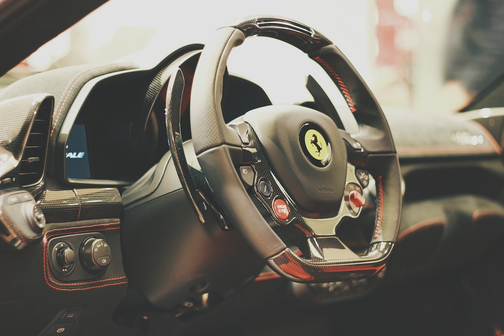
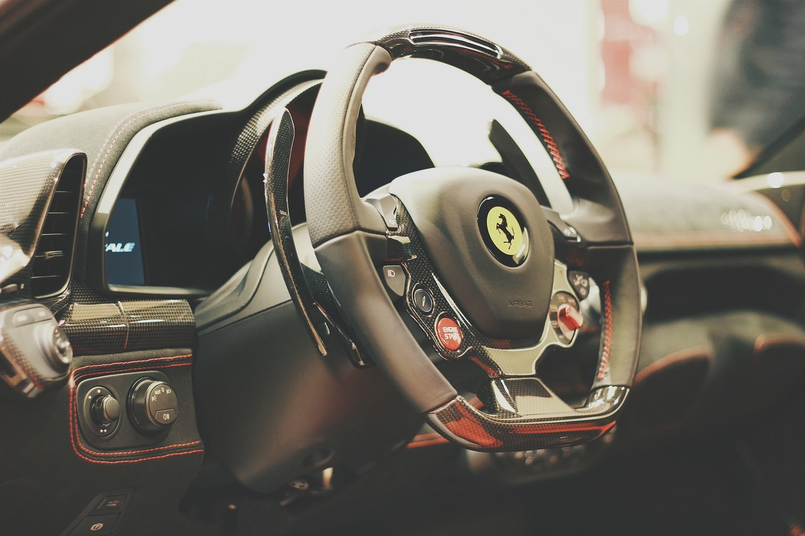

Bienvenue Chez Ferrari
La première supercar de Ferrari, la GTO, part à la découverte des magnifiques Dolomites italiennes à l’occasion de son 40e anniversaire
1. Histoire et Héritage
Fondée en 1939 par Enzo Ferrari, la marque a une riche histoire liée aux courses automobiles, notamment en Formule 1. Cet héritage lui confère une aura unique.
2. Performance
Les voitures Ferrari sont synonymes de haute performance. Elles intègrent des technologies avancées issues de la compétition, offrant une expérience de conduite inégalée.
3. Design
Le design des Ferrari est souvent considéré comme une œuvre d’art. Chaque modèle allie élégance et aérodynamisme, ce qui attire les passionnés et les collectionneurs.
4. Exclusivité
Ferrari produit un nombre limité de voitures chaque année, ce qui crée un sentiment d’exclusivité. Posséder une Ferrari est un symbole de statut social.
 
